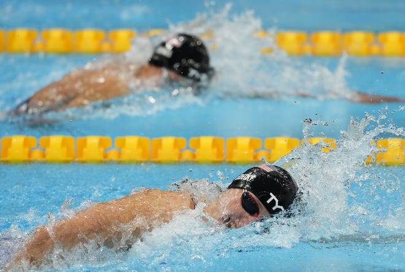
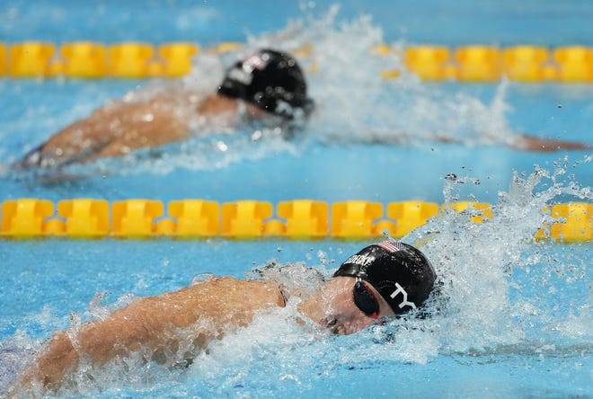

Venue & Infrastructure
Exhibition Hall: Large enough to accommodate various stalls and visitors.
Booths/Stalls: Spaces for participants to display their projects.
Tables & Chairs: For displays, presentations, and seating for visitors.
Electricity Supply: For powering exhibits and equipment.
Lighting: Adequate lighting for booths and displays.
Wi-Fi/Internet Access: For participants and visitors.
Exhibition Materials
Display Boards: For project posters, charts, and presentations.
Projector & Screens: For visual presentations and demonstrations.
Audio-Visual Equipment: Speakers, microphones, and sound systems.
Lab Equipment: Specific to the projects being displayed
Logistics & Support
Transportation: For participants and their equipments.
Accommodation: For out-of-town participants and judges.
Catering: Refreshments for participants, judges, and visitors.
Security: Guards and surveillance systems to protect the exhibits.
Human Resources
Volunteers: To assist with registration, guiding visitors.
Judges: Experts in various scientific fields to evaluate the projects.
Event Coordinators: To manage the overall flow of the event.
Technical Support Staff: To handle any technical issues.
Marketing & Communication
Promotional Materials: Flyers, posters.
Social Media Campaigns: To attract participants and visitors.
Press Releases: For local media coverage.
Signage: To guide visitors to different sections of the exhibition.
Registration & Ticketing
Online Registration System: For participants to register their projects.
Badges/Passes: For participants, judges, media, and visitors.
Ticketing System: If the event requires an entry fee.
Technology & AV Setup
Computers & Tablets: For participants to showcase digital projects.
Video Recording Equipment: To document the event and presentations.
Live Streaming Equipment: For broadcasting the event online.
QR Codes/AR Displays: For interactive exhibits.
Decoration & Branding
Thematic Decorations: To match the theme of the exhibition.
Banners & Posters: Displaying the event’s name, sponsors, and key information.
Trophies & Certificates: For the best projects and participation.
Legal & Compliance
Permits & Licenses: Necessary permissions from local authorities.
Insurance: Coverage for the event, participants, and exhibits.
Safety Measures: Fire extinguishers, first aid kits, and emergency exits.
Post-Event Activities
Cleanup Crew: To clear the venue after the exhibition.
Feedback Collection: Surveys from participants, judges, and visitors.
Thank You Notes: For sponsors, volunteers, and participants.
Media Coverage: Summarizing the event in local media and social platforms.
 
